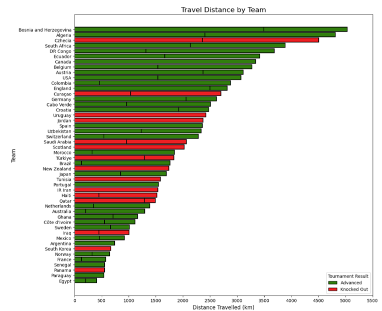

FIFA World Cup 2026
Flight Travel Analysis
A statistical analysis on whether the flight travel time of teams affected their FIFA World Cup 2026 matches and performances.
Project Overview
This project explores the relationship between the total flight distance travelled by national teams during the group stage and their tournament outcomes. We investigate whether long-distance travel leads to fatigue and negatively impacts performance.
Key Highlights
- Processed flight route data for all 48 teams
- Calculated total travel distances
- Compared performance between teams that advanced vs. knocked out
- Performed statistical tests to evaluate significance
